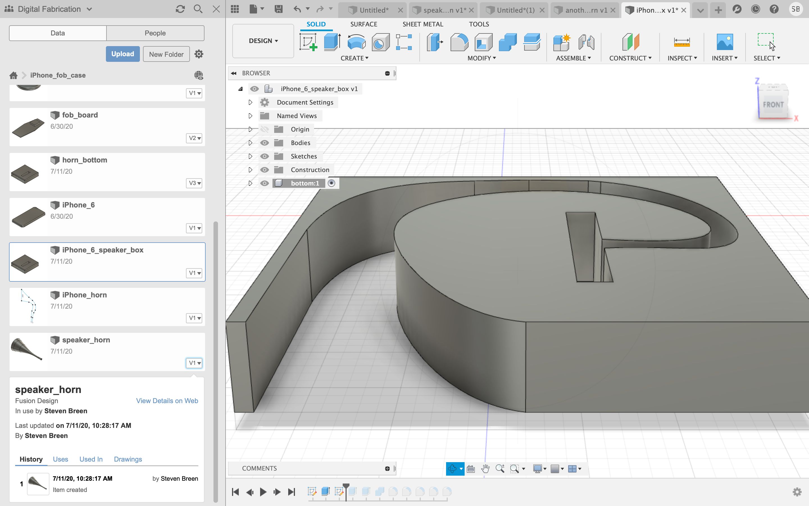
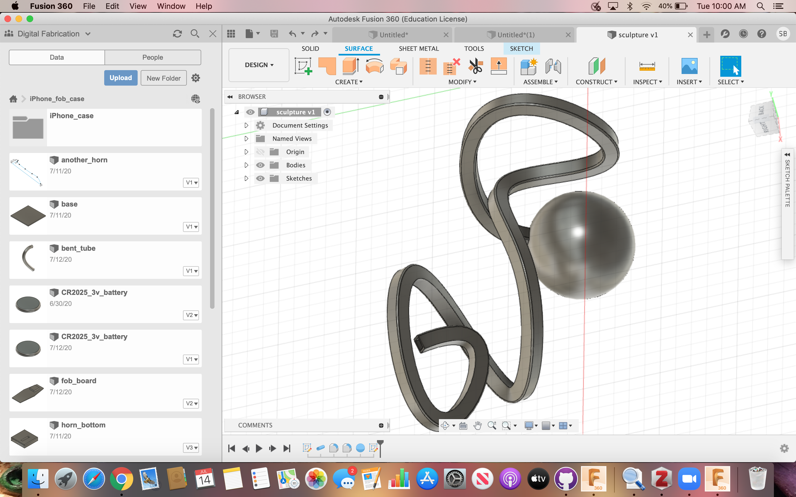
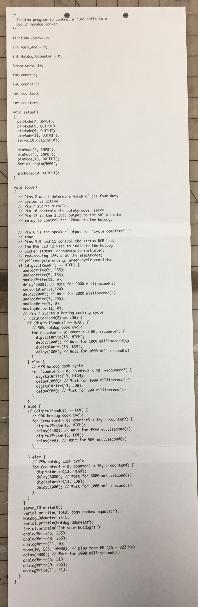

3D Design & Printing
iPhone 6 speaker cube:

To use the speaker cube: insert an iPhone 6 into the rectangular slot in the top of the cube and play the phone's audio on "speaker".
Link to speaker cube on Fusion 360 Speaker Cube.
Download my STL fileReturn to my home page.
Inside of speaker cube:
Three-Dee Something:
I had a few free minutes so I did a little sculpture project using the "pipe" and "sphere" commands.
Link to Three-Dee Something in Fusion 360 Something.
Final Project Updates:
Video of the potential linear actuator fo the hotdog cooker safety cover. It appears to have plenty of torque, but may be a bit slow. Stepper delay is only set at 3ms with almost 12vdc feeding the stepper. I am happy with the motor shaft to threaded rod coupling.